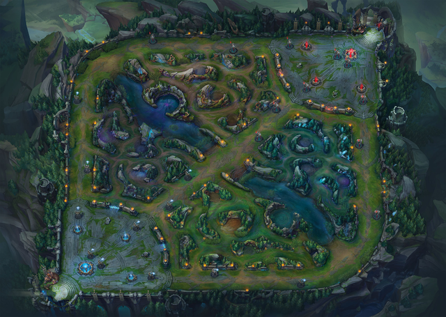

|  |
League of Legends est un jeu de stratégie aux influences jeu de rôle inspiré du mod DotA (Defense of the Ancients) de Warcraft III, et d'ailleurs développé par les mêmes personnes. Il s'agit d'un jeu de stratégie présentant plusieurs héros (assassins, mages ou encore créatures du néant...) que vous devrez protéger pour décrocher la victoire dans un univers fantastique coloré. Site offiiel |
|
Jeu d'action en vue à la première personne, Overwatch prend place dans un futur proche, en 2074 pour être exact. Dans des parties en 6 contre 6, le joueur incarne un héros parmi la palette proposée. Chaque personnage a des caractéristiques et des capacités particulières et un rôle défini parmi Attaque, Défense, Tank et Soutien. Les équipes cherchent donc un équilibre afin d'être le plus efficace possible dans l'accomplissement des objectifs (Capture de points, etc). Site offiiel |
|
Counter-Strike : Global Offensive est un FPS multijoueurs en ligne sur PC. Les anti-terroristes et les terroristes s'affrontent dans différents modes de jeu avec une trentaine d'armes différentes, sans compter les grenades. Un mode entraînement permet aux joueurs de s'habituer aux commandes. Site offiiel |
|
Starcraft II est un jeu de stratégie en temps réel sur PC au sein d'une galaxie où trois factions s'affrontent sans merci. D'un côté, les Terrans, descendants de colons humains. De l'autre, les Protoss, une race très avancée technologiquement et dotée de pouvoirs psioniques. Enfin, les Zergs, hordes de créatures diverses issues de mutations biologiques et regroupées en essaim. Cet opus comprend la campagne solo Terran et tout le nécessaire pour jouer en multi. Site offiiel |